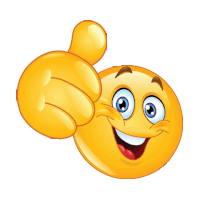

Kомпьютерная игра, возникшая в середине или в конце 1970-х. Игрок управляет длинным, тонким существом, напоминающим змею, которое ползает по плоскости (как правило, ограниченной стенками), собирая еду (или другие предметы), избегая столкновения с собственным хвостом и краями игрового поля. В некоторых вариантах на поле присутствуют дополнительные препятствия. Каждый раз, когда змея съедает кусок пищи, она становится длиннее, что постепенно усложняет игру. Игрок управляет направлением движения головы змеи (обычно 4 направления: вверх, вниз, влево, вправо), а хвост змеи движется следом. Игрок не может остановить движение змеи.
